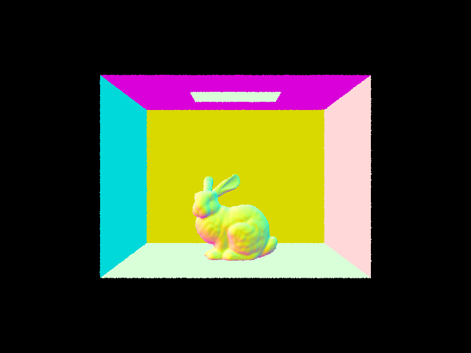
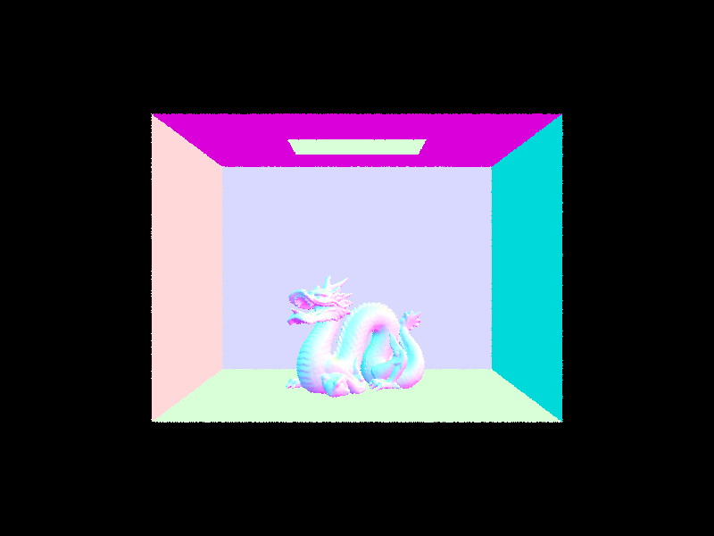

Part 1: Ray Generation and Scene Intersection
Ray Generation and Pixel Sampling
The ray generation pipeline maps normalized 2D image coordinates to 3D world-space rays.
In Camera::generate_ray, we first calculate the size of the virtual camera sensor using the field of view angles: \(\text{halfW} = \tan(\frac{hFov}{2})\) and \(\text{halfH} = \tan(\frac{vFov}{2})\). We then linearly map the input normalized coordinates \((x, y)\) to the sensor plane coordinates \((cx, cy)\).
Because the camera looks down the \(-Z\) axis, the direction vector in camera space is \((cx, cy, -1)\). We normalize this vector. To transform this direction from camera space to world space, we multiply it by the camera-to-world rotation matrix c2w. Finally, we construct a Ray originating from the camera's position pos and set its valid intersection range using min_t = nClip and max_t = fClip to ignore objects outside the clipping planes.
In PathTracer::raytrace_pixel, we perform Monte Carlo integration to estimate the radiance of each pixel. We use gridSampler->get_sample() to generate ns_aa random sample points within the pixel area. For each sample, we generate a ray, calculate its radiance using est_radiance_global_illumination, and add it to a total sum. Finally, we divide the total sum by the number of samples to get the average radiance and update the pixel buffer.
Triangle Intersection Algorithm
To implement the ray-triangle intersection, I used the Möller-Trumbore algorithm. This algorithm is highly efficient because it directly solves for the intersection point and the barycentric coordinates without needing to calculate the plane equation first.
The core of the algorithm combines the ray equation with the barycentric definition of a triangle:
Where \(O\) is the ray origin, \(D\) is the ray direction, \(t\) is the distance along the ray, and \(P_1, P_2, P_3\) are the triangle vertices.
By rearranging the terms and defining the edge vectors (\(E_1 = P_1 - P_0\), \(\vec{E}_2 = \vec{P}_2 - \vec{P}_0\)) and the distance from the ray origin to the first vertex (\(S = O - P_0\)), we construct a \(3 \times 3\) linear system: \([-D, E_1, E_2] [t, b_1, b_2]^T = S\).
Then, we solve this system for the unknowns (\(t\), \(b_1\), \(b_2\)) using Cramer's rule, which expresses the solution in terms of determinants.
Finally, the determinants are rewritten using scalar triple products: \(\det(A, B, C) = A \cdot (B \times C) = - A \cdot (C \times B)\):
Where \(S_1 = D \times E_2, S_2 = S \times E_1\)
Result


